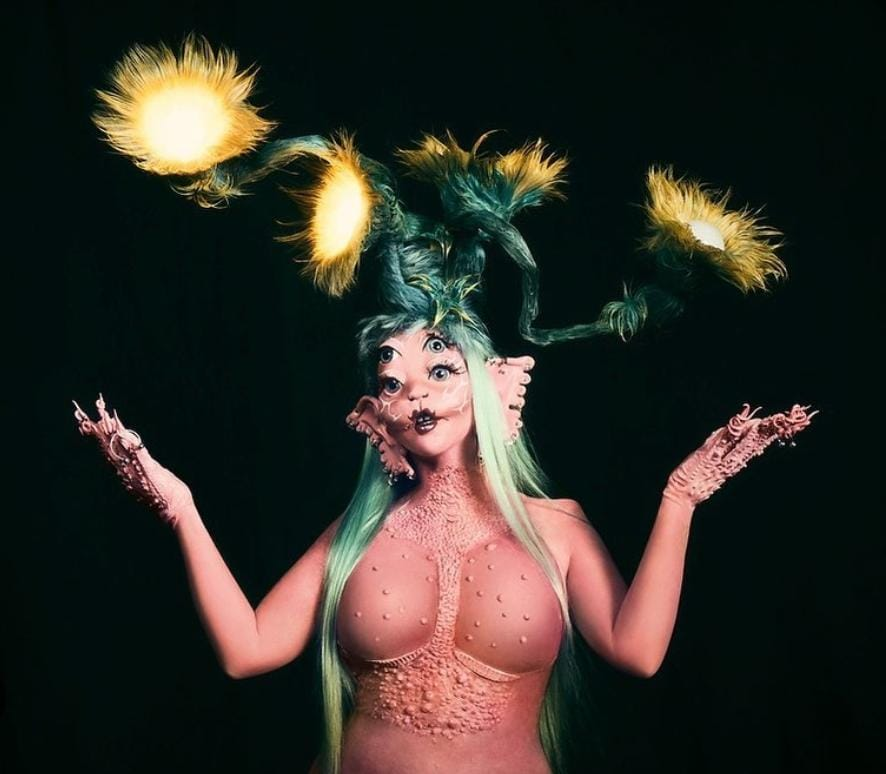

A Crybaby lançado em 14 de agosto de 2015 foi a fase da Melaine que fez com que o nome dela fosse mais reconhecido
no album mostra um retrato de como a sociedade e a mídia podem deixar as pessoas doentes. contam a história da personagem Cry baby (Bebê Chorona), idealizada pela artista, vivenciando situações da
infância, amor, família desestabilizada, abuso, autoestima, com um olhar sobre como esse período pode afetar a personalidade, em um ambiente tóxico.
Cada musica representa um momento da vida dela, deixando claro como ela tem dificuldade
de se relacionar, construir laços, passando por diferentes experiências que a tornam mais insegura.
K-12
K-12 lançado em 6 de setembro de 2019 fez sucesso com o compilado de todas as musicas assim formando um filme cujo carrega o nome "K-12" no qual
vemos situações comuns de uma adolescente, como primeiro amor, problemas de autoestima, menstruação, sexualidade, criação de uma personalidade,
entre outros aspectos. A escola é um pesadelo para os alunos que sofrem castigos físicos e psicológicos, os professores pouco se importam com os estudantes.
Portals

Portals é a nova fase que teve inicio em 31 de março as musicas que representa a libertação da mente e do corpo
indenpendentemente dos sacrifícios que isso possa significar. Melanie, no ”Portals”, MATOU a ”Cry Baby”: a personagem mais icônica que basicamente deu vida para a Melanie
Martinez que nós conhecemos. No ”Portals”, Melanie cria uma nova criatura que é consequência da reencarnação da Cry Baby, uma vez que a personagem havia morrido mas renasceu
em um novo universo com novos propósitos, pensamentos e, basicamente, uma nova vida.